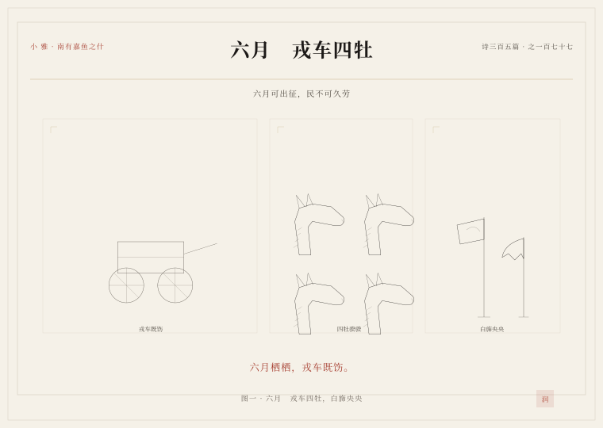
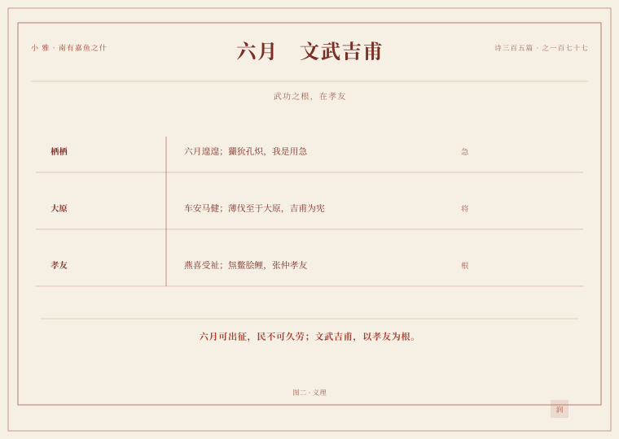

第一百七十七篇 六月
小雅 · 南有嘉鱼之什 SJ177
朗读 · 普通话
依经文原文朗读，章次不读出；配古琴底乐，不改速、不加拖腔。全库同一音色（豆包 TTS），非播音员录制。
一 解题
诗三判：
- 谁在说：从王北伐之臣，或叙宣王北伐者。六月栖栖，戎车既饬；玁狁孔炽，王于出征。
- 说什么事：六章。前二章写备战、选马、成服；三章写薄伐；四章写玁狁侵地、元戎先行；五章写大原、吉甫；六章写燕喜、张仲孝友。
- 为何编在此：菁莪育材，六月用材；教之于平日，试之于急难。
小雅由育入征。
《毛序》：「《六月》，宣王北伐也。……小雅尽废，则四夷交侵，中国微矣。」
朱子《诗集传》：「赋也。栖栖，犹皇皇，不安也。饬，整也。骙骙，强也。常服，韦弁服也。炽，盛也。急，急也。于，曰也。匡，正也。」二章：「比物，齐其力也。骊，黑马。闲，习。则，法。服，戎服。三十里，一舍也。」三章：「修广，长广。颙，大貌。奏，进。肤，大。公，功。严，威。翼，敬。共，供。」四章：「茹，度。整，整居。焦获、镐、方、泾阳，皆地名。织文鸟章，旗上鸟章。白旆，白旗。央央，鲜明。元戎，大车。」五章：「轾，车之前覆；轩，车之后却。佶，健。闲，习。大原，地名。吉甫，尹吉甫。宪，法。」六章：「祉，福。御，进。炰，烝。脍，细切。张仲，吉甫之友。孝友，善父母兄弟。」
本库的看法：《六月》不是一首夸武功的诗，是一首「以急难试材」的诗。
六月盛夏，非用兵之时；然「玁狁孔炽」，不得不急。诗写车马、戎服、三十里、元戎、大原，皆实；末章忽写「炰鳖脍鲤」，忽问「张仲孝友」：武功之根，在朋友孝友。
须辨：栖栖是遑遑不安，不是栖居；饬是整顿，不是装饰；常服是韦弁服，不是常衣；比物是齐马力，不是比物类；肤公是大功，不是皮肤；共武是供武事，不是共同。断语：六月可出征，民不可久劳；文武吉甫，以孝友为根。
先辨五事：「栖栖」是遑遑不安，不是栖居；「饬」是整顿，不是装饰；「常服」是韦弁戎服，不是日常衣服；「比物」是齐同马力，不是比物类；「肤公」是大功，不是皮肤。
二 经文
第一章
六月栖栖，戎车既饬。四牡骙骙，载是常服。
玁狁孔炽，我是用急。王于出征，以匡王国。
第二章
比物四骊，闲之维则。维此六月，既成我服。
我服既成，于三十里。王于出征，以佐天子。
第三章
四牡修广，其大有颙。薄伐玁狁，以奏肤公。
有严有翼，共武之服。共武之服，以定王国。
第四章
玁狁匪茹，整居焦获。侵镐及方，至于泾阳。
织文鸟章，白旆央央。元戎十乘，以先启行。
第五章
戎车既安，如轾如轩。四牡既佶，既佶且闲。
薄伐玁狁，至于大原。文武吉甫，万邦为宪。
第六章
吉甫燕喜，既多受祉。来归自镐，我行永久。
饮御诸友，炰鳖脍鲤。侯谁在矣？张仲孝友。
三 韵读
- 一章：栖、饬、骙、服、炽、急、国，职部相叶。声急。
- 二章：骊、则、服、里、子，职、之相叶。声整。
- 三章：广、颙、公、服、国，阳、东相叶。声壮。
- 四章：茹、获、方、阳、章、央、行，鱼、阳相叶。声扬。
- 五章：安、轩、佶、闲、原、宪，元、真相叶。声稳。
- 六章：喜、祉、久、友、鲤、友，之、幽相叶。声和。
读法：五章以前皆急、整、壮、扬，六章忽转「燕喜」「脍鲤」「孝友」，声和。一和收五壮，是诗之深。
四 字义与名物
- 栖栖：遑遑不安。饬：整顿。骙骙：强盛。常服：韦弁戎服。孔炽：甚盛。急：急迫。王于出征：王曰出征。匡：正。
- 比物：齐同马力。四骊：四匹黑马。闲：习。则：法。服：戎服。三十里：一舍。佐：辅佐。
- 修广：长广。颙：大貌。薄伐：往伐。奏：进。肤公：大功。严：威。翼：敬。共：供。武服：武事。
- 匪茹：不可度。整居：整众而居。焦获、镐、方、泾阳：地名。织文鸟章：旗上鸟纹。白旆：白旗。央央：鲜明。元戎：大车。启行：先行。
- 轾轩：车之前覆后却。佶：健。闲：习。大原：地名。吉甫：尹吉甫。宪：法。
- 燕喜：宴喜。祉：福。御：进。炰：蒸。脍：细切。侯：何。张仲：吉甫之友。
五 今译
一章：六月遑遑不安，戎车已整顿。四牡强盛，载着戎服。玁狁甚盛，我因此急。王曰出征，以正王国。
二章：齐同四匹黑马，习之有法。正当六月，已制成戎服。戎服已成，日行三十里。王曰出征，以佐天子。
三章：四牡长广，其大颙颙。往伐玁狁，以进大功。有威有敬，供武之事。供武之事，以定王国。
四章：玁狁不可度，整众居焦获。侵镐及方，至于泾阳。旗上鸟章，白旆鲜明。大车十乘，先行出发。
五章：戎车既安，如轾如轩。四牡既健，既健且习。往伐玁狁，至于大原。文武吉甫，万邦为法。
六章：吉甫宴喜，既多受福。从镐归来，我行已久。进饮诸友，蒸鳖脍鲤。谁在座？张仲孝友。
六 章旨
- 一章：六月栖栖，是「不时」；戎车饬，是「备」；急在寇，不在君。
- 二章：比物四骊，是「选」；三十里，是「节」；兵贵整，不贵速。
- 三章：四牡修广，是「盛」；共武服，是「敬」；有威有敬，武乃不暴。
- 四章：玁狁侵地，是「危」；元戎先行，是「勇」；旗章鲜明，是军容。
- 五章：车安马健，是「稳」；吉甫为宪，是「将良」；文武兼备，是将之全。
- 六章：燕喜受祉，是「归」；炰鳖脍鲤，是「享」；张仲孝友，是「根」；武功以孝友为根。
七 诗教
- 兵不得已：六月用兵，非时；诗不讳「急」，也不夸「武」；知不得已，则兵不黩。
- 将有文武：吉甫「文武」，不是文饰；文能附众，武能威敌。
- 功归孝友：末章不写战功，写朋友孝友；无孝友，则功成而德不成。
八 分寸与边界
- 不把「栖栖」读成栖居：栖栖是遑遑不安；读成栖，则六月成闲居。
- 不把「常服」读成日常衣：常服是韦弁戎服；读成常衣，则军容失。
- 不把「比物」读成比物类：比物是齐马力；读成物类，则选马无义。
- 不把「肤公」读成皮肤：肤公是大功；读成皮肤，则「奏」无着。
- 不把「共武」读成共同：共是供；读成共，则武事成共享。
九 存疑
- 诗旨：毛序「宣王北伐」，朱子从之；一说「吉甫作」。本库从北伐，兼取吉甫之辞。
- 「常服」：毛传「韦弁服」；从戎服。
- 「茹」：毛传「度也」；从度。
- 「大原」：地名，在今甘肃固原一带；从地名，不坐实。
- 「张仲」：吉甫之友，一说是吉甫之妻党；从友。
十 跨典
- 《诗经·小雅·采薇》「玁狁之故」；此篇「玁狁孔炽」，同是北患。
- 《尚书》「有备无患」；此篇比物、成服、三十里，是备。
- 《论语》「朋友信之」；此篇张仲孝友，是朋友之根。
十一 双卡与图
六对：
| 栖栖（遑遑不安） |
栖栖（栖居） |
| 常服（戎服） |
常服（日常衣） |
| 比物（齐马力） |
比物（比物类） |
| 肤公（大功） |
肤公（皮肤） |
| 共武（供武事） |
共武（共同） |
| 孝友（善父母兄弟） |
孝友（孝与友两事） |

图一 · 六月 戎车四牡，白旆央央

图二 · 六月 文武吉甫，张仲孝友